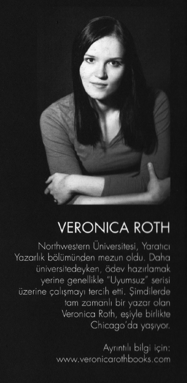

Northwestern Üniversitesi, Yaratıcı Yazarlık bölümünden mezun oldu. Daha üniversitedeyken, ödev hazırlamak yerine genellikle "Uyumsuz" serisi üzerine çalışmayı tercih etti. Şimdilerde tam zamanlı bir yazar olan Veronica Roth, eşiyle birlikte Chicago'da yaşıyor.
Ayrıntılı bilgi için:
www. veronicarothbooks.com